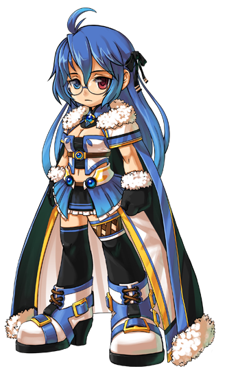
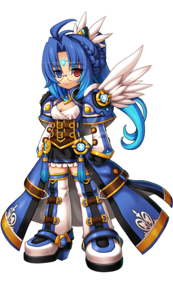

Informações Principais do Personagem
Nome: Mari Ming Onette
Idade: Desconhecida
Origem: Calnat
Mari ainda é um dos grandes mistérios da Grand Chase. Encontrada pelo grupo a caminho do
Altar da Destruição, Mari não possuía nenhum traço de sua memória. De semblante apático e
inexpressivo, e olhos heterocromáticos que não deixam transparecer quase nenhuma emoção, talvez
o fato de não se lembrar de absolutamente nada é que alimente a maior motivação da garota: a
busca pelo conhecimento.
Sempre com um livro a tira colo, Mari procura analisar tudo de forma fria e científica para
tentar compreender o mundo ao seu redor e demonstra uma grande devoção pela pesquisa. O que é
inegável ao seu respeito é sua capacidade de mesclar tecnologia avançada e magia, traços
característicos do antigo e extinto povo de Calnat, o maior reino tecnológico que já existiu no
passado, antes de desaparecer misteriosamente em uma gigantesca explosão.
Ao que tudo indica, a menina é a última sobrevivente de Calnat, mas seu passado ainda guarda
muitos mistérios.
Personalidade
Mari não é capaz de revelar seus pensamentos para as pessoas ao seu redor já que ela ficou
sozinha por tanto tempo. Mas para aqueles por quem ela estiver interessada ou aqueles que ela
gostar, ela indiretamente mostra seus sentimentos agindo discretamente e sendo gentil. Ela
normalmente não fala muito e parece que ela está presa em seus pensamentos, mas ela conversa
quando se trata de uma coisa que ela gosta. Quando ela gosta de algo, ela não consegue se livrar
disso por um bom tempo.
Classes
Tecnomaga
Arma: Manual
Duelista
Arma: Revólver

Polaris
Arma: Marreta

La Geas
Arma: WDW
Habilidade especial
Corrida no ar
A Corrida no Ar é uma das maiores ferramentas da Mari. Ela projeta as mãos em baixo do seu lado,
usando seus poderes para faze-la planar pelos ares. O comando é Seta Direita Seta Direita+ Seta
Cima, apesar dela atirá-la exatamente no momento em que a sua Corrida simples termina.
Aparentemente a Corrida no Ar é um dos pulos mais altos usados; ele simplesmente supera o Salto
da Caçadora, e até o Pulo Duplo executado pelas classes da Amy, o Ninja, a Arqueira, e a Nova.
Além disso com o KORMET da Polaris, ela pode usar uma propulsão horizontal depois da Corrida no
Ar.
Trivialidade: Pode-se notar que, os seus poderes parecem sair do seu traseiro. Porém, se
você
olhar mais de perto, a sua mão está perto do seu lado executando o poder.
Escudo de Mana
Um escudo é criado que substitua Mana por Vida.¹ Em outras palavras, quando atacado todo o dano
infligido é subtraido da barra de MP enquanto a Mari tiver MP guardado. Se o dano exceder a
quantidade de MP guardado, o excesso de dano será subtraido da Vida (HP). Ele pode ser uma
habilidade útil, por ela proteger de danos prejudiciais. Todos duram 10 segundos, mas não
precisam de carregamento.
O comando é XX+Seta Cima.
O Escudo de Mana protege o usuário dos seguintes tipos de dano:
Envenenar ²
Amaldiçoar ²
Onda de Impacto
Congelar ²
Petrificar ²
Ataques a distância
Nuvens Tóxicas ²
Bolas de Fogo e efeitos de fogo ²
Derrubar
Ataques de baforadas
Choque ou eletrocutar
Afogamento
Combinações/Aplicação de ataques
Habilidades de MP usadas por outros jogadores
Notas:
1. Ironicamante, o Escudo de Mana não usa nenhuma Mana (MP) quando ativado, apesar da
intensidade em que ele é usado. Porém, mesmo que ele não use MP para ser ativado, jogadores só
precisam de uma pequena quantidade de MP guardado para que o Escudo tenha efeito. Por exemplo,
mesmo se você tiver 1 barra de MP, o Escudo poderá ser ativado e te proteger só por esta 1
barra. Se você tiver 3 barras guardadas, o escudo te protegerá por todas as 3 barras, e assim
vai.
2. Mesmo que você esteja inicialmente protegido de envenenar, amaldiçoar, ser congelado,
queimado, ou petrificado, seus efeitos podem durar até o fim da duração do Escudo de Mana.
Qualquer tipo de dano continuará drenando a Mana (MP) até que a barra de MP estiver vazia;
quando isto acontecer ele começará a drenar a Vida (HP). Se você ainda tiver o efeito do Escudo
de Mana quando você sair de um Congelar ou de um Petrificar, o Escudo de Mana ainda absorverá o
dano. Assim, é útil ativar o Escudo só antes que você seja afetado por estes efeitos ou quando
você souber que você entrará em contato com eles.
Caixas Maquinárias
Uma caixa contendo uma ferramenta especial é fornecida. Pode ser notado que a caixa tem um
número nela, indicando o nível da maquinaria. Porém, todas as caixas contém objetos diferentes,
então não existe um nível de "potência".
O comando é XX+C+Z. Note que o C representa o numero pressionado. Porém, se
o jogador não apertar a tecla de Ataque Z imediatamente para criar a ferramenta especial, as
caixas explodirão imediatamente depois de agirem como minas. É interessante notar que as caixas
terão a palavra "Sector (Setor)" nelas seguida pelo "Lv. (Nv.)" e um "número".
Itens agem idênticos à Coluna de Pedra do Druida e à Boneca da Maga; eles servem tanto como um
obstáculo quanto como um objeto destrutivo.
Como Duelista e Polaris, as caixas podem ser invocadas mais rapidamente. Como Polaris, existe
uma caixa nível 3. A La Geas não possui nenhuma caixa que pode ser invocada.
Caixas Maquinárias invocadas:
Tecnomaga
Nível 1 - Um canhão azul que atira uma bola de canhão horizontalmente por uma distância curta.
Atira seis vezes.
Nível 2 - Um canhão vermelho que atira uma bola de canhão para cima em um baixo arco por uma
curta distância. Atira seis vezes causando um efeito de fogo no chão.
Duelista
Nível 1 - Um "Empurrão" que joga os inimigos longe causando uma pequena quantidade de dano. Ele
funciona como uma grande mina de proximidade sem efeito de explosão. Ele dura 8 segundos se não
for ativado e desaparece quando entra em contato com um inimigo.
Nível 2 - O Míssil Triplo é um canhão que só lança dois mísseis para cima em uma altura media.
Cada míssil, porém, explode no ar para liberar três ogivas que atingem o chão na mesma área. Ele
tem um alcance mais longo que os canhões da Tecnomaga. Ele funciona como um Míssil balístico
intercontinental que lança ogivas nucleares individuais.
Nota: O míssil maior atirado do canhão só irá atravessar o inimigo, não tendo nenhum efeito. Ele
é usado melhor em alvos de longo alcance.
Polaris
Nível 1 - O Gerador de Mana é um dispositivo com duas antenas que aumenta a velocidade da
regeneração de MP quando os membros do grupo estiverem por perto.
Nota: Durante o PvP o mesmo drena o MP dos adversários, anula o dano de quem estiver na área de
alcance, prende os adversários nas ondas de energia, e serve de barreira.
Nível 2 - Um canhão vermelho que mistura das caixas de Nível 2 da Tecnomaga e o da Duelista, mas
ele atira três bolas de canhão duas vezes em uma curta distância, causa um efeito de fogo no
chão onde elas caem.
Nível 3 - Portais que permitem ao grupo se teleportar de um lugar para outro na fase. O jogador
tem que construir dois deles em lugares diferentes para eles funcionarem- um como o ponto de
início e o outro como uma saída. Invocar um terceiro portal apagará o primeiro feito. Note que
eles ficarão no chão para sempre. por outro lado, cada portal custa cerca da metade da sua barra
de MP.
Partículas
Existem várias Partículas que normalmente amplificam as habilidades comuns da Mari. Normalmente
elas agem como um projétil através do comando C ou do Crítico/Duplo, dependendo da classe.
As vezes elas agem como um buff. As partículas permanecem por um grande período de tempo,
atingindo de 12-20 segundos, dependendo da partícula.
O comando de criação é XX+X+Z, e cada uma terá uma "marca" durante o tempo de
criação, e demora cerca de 3 segundos para uma aparecer, e atualmente somente três partículas
aparecem significando que o tempo de criação é de 4 segundos no total. Diferentes partículas
podem ser criadas dependendo da classe.
Note que a Mari pode simplesmente correr para cancelar a criação, para simplesmente evitar
qualquer ataque que vier.
Partículas criadas:
Tecnomaga
Nível 1 - Cria uma Partícula Azul que é atirada ligeiramente para baixo. Criada a qualquer
momento e dura 20 segundos.
Nível 2 - Cria uma Partícula Vermelha que é atirada ligeiramente para cima. Criada na primeira
marca e dura 20 segundos.
Nível 3 - Cria uma Partícula Verde que pode ser atirada exageradamente para baixo enquanto sobe.
Criada na segunda marca ou toda a duração e dura 20 segundos.
Duelista
Munição Mágica - Encanta uma unica bala com Gelo, causando um efeito congelar no impacto. Criada
em toda a duração enquanto deixa permanentemente encantada até atirada.
Polaris
Partícula - Cria uma Partícula Azul, e quando equipada, melhora muito a Regeneração de MP.
Criada em toda a duração (primeira marca) enquanto dura 12 segundos.
La Geas
Reparar -Cria três pequenas Partículas Azuis, que quando equipadas, amplificam a recuperação de
MP por 12 segundos, porém, quando se é atacado as partículas desaparecem instantaneamente
permitindo que Mari recupere metade da sua barra de MP.
Invocação Maquinária
Uma ferramenta que invoca um tipo de maquinaria que é usado para ajudar Mari nas batalhas. Para
cada classe da Mari, as maquinas invocadas ficam mais diferentes. Elas disfarçam o Combo Básico,
Crítico/Duplo, Ataques Aéreos, e Corridas com Ataque. Elas duram 20 segundos, e leva cerca de 5
segundos para construir uma. Não é preciso carregar.
As coordenadas são XX+X+C (Repetidamente). Note que existe uma rara ocasião que
ela falhará aleatoriamente.
A Tecnomaga e a Duelista invocam uma ferramenta chamada W.D.W..
A Polaris constrói um robô em miniatura que pode aumentar de tamanho chamado "KORMET".